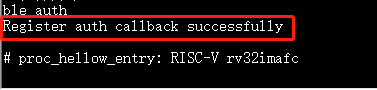
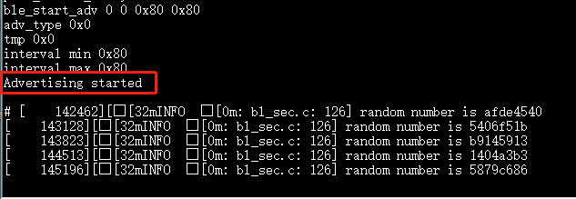
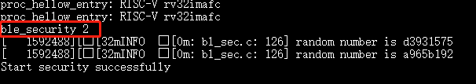

For BL602, enter customer_app/bl602_demo_event project, compile with script genromap , and dowload the bin file. Use stack_ble cli command to enable ble. This Demo doesn't start any ble behavior by default. If you need to start ble advertising or ble scan or initiate a ble connection, please use the cli commands to initiate the corresponding behavior.
For BL702, enter customer_app/bl702_demo_event project, compile with script genblem1s1 , and dowload the bin file. Ble has been enbled in this demo. This Demo doesn't start any ble behavior by default. If you need to start ble advertising or ble scan or initiate a ble connection, please use the cli commands to initiate the corresponding behavior.
For BL702L，enter customer_app/bl702l_demo_ble_peripheral project, compile with script genblem1s1p , and dowload the bin file. in this demo, ble has been enbled, adv is started, and low power mode is enabled.
You can wake up BL702L by entering any cli command with a length of more than 10 bytes. The cli command only wakes up BL702L and disable low power mode, it will not be executed. BL702L will no longer actively enter
into low power mode. If you do not need to enable adv at this time, you can disable adv by inputting cli command ble_stop_adv. If you want to enable BL702L low power mode, please input cli command pds_start.
The following commands are shared by BL602, BL702, and BL702L.
Use ble_init 、 ble_auth to register releated callbacks。

Use ble_start_adv000x800x80 to start ble adv。

Use mobile app nRFConnect to scan nearby ble devices，and find out our devices.
Use ble_conn_update0x60x60x00x1f4 to update connection parameters.
During SMP process, different commands are used according to different security level. Describe the cases of security level 2 and 3 as follows.
Use ble_security2 to initiate SMP after ble connection is established.

Once Confirmpasskeyforxx:xx:xx:xx:xx:xx(public)：xxxxxx is printed out on serial port, input ble_auth_passkey_confirm to confirm passkey.
If Bondedwithxx:xx:xx:xx:xx:xx(public) is printed out , SMP is completed successfully.
Use ble_security3 to initiate SMP after ble connection is established.
Once Confirmpasskeyforxx:xx:xx:xx:xx:xx(public)：xxxxxx is printed out on serial port, input ble_auth_passkey_confirm to confirm passkey.
If Bondedwithxx:xx:xx:xx:xx:xx(public) is printed out , SMP is completed successfully.
Step 2：Download the firmware with OAD service enabled
Take the project bl702_demo_event as an example，enable BLE OTA function by below steps：1)Add CONFIG_BT_OAD_SERVER=1 in the compilation script such as genblem1s1，then the content of the script is makeCONFIG_BT=1CONFIG_BLECONTROLLER_LIB=m1s1CONFIG_BT_OAD_SERVER=1-j; 2)Application layer calls API oad_service_enable to register OAD service. Execute the compilation script to generate bin file with OAD service and download it to BL702 board.
Input below cli commands via serial port to start ble adv.
ble_init
ble_start_adv000xa00xa0
Step 3：Generate OTA file
Take the project bl702_demo_event as an example, add print information in version_cmd function in cli.c file to see whether OTA is successful. The content of compilation script is makeCONFIG_BT=1CONFIG_BLECONTROLLER_LIB=m1s1CONFIG_BT_OAD_SERVER=1-j , and generate bin file.
Open Dev Cube tool to download firmware. Choose related parameters as follows, and Firmware Bin is the OTA file generated in step 3. For Partition Table, select partition_cfg_1M.toml in which 1M flash is used. For Factory Params, select bl_factory_params_IoTKitA_32M.dts.
Then, click Creat&Download button (The purpose of this step is to create an OTA image, no actual download, no need to connect the hardware board, and the download failure prompt can be ignored.). If there are prompts FWOTAbinisDone and FWOTAxzisDone in the log, then the OTA file is generated successfully.
Find out the generated OTA file in file directory of Dev cube. FW_OTA.bin.hash is a file without compression. FW_OTA.bin.xz.hash is a compressed file. In this example, FW_OTA.bin.xz.hash is used for OTA upgrade, and need to be put on the phone.
Step 4：OTA upgrade
On the phone, open APP to select related service, and scan ble devices (automatic scan is enabled by default).
Select device with name BL702-BLE-DEV to connect.
Click 设备升级 buttion in APP；
Select the file to be upgraded in the file directory, file is FW_OTA.bin.xz.hash.
Click SENDVERREQ button to send a version request to obtain information about current bin file.
Click STARTOTA to do OTA.
Reset BL702 device, then enter the cli command sysver, and find the added print information in step3 from the serial log. If the added info is found out, it means OTA is successful.
Function: Among multiple connections, set a connection object as the current connection object.
Prameter0: The address type of remote device.
0：Public Device Address.
1：Random Device Address.
Prameter1: The address value of remote device, with more significant bytes first.
Example：After multiple devices are successfully connected, input ble_select_conn15F10546C8D83 to set the selected connection object as the current connection object. Subsequent connection related operations such as ble_read will be performed on this connection.
Function：Confirm the passkey received from the remote device. The passkey is also displayed on the remote device during the pairing process.
Parameters: None
Example：Once Confirmpasskeyfor48:95:E6:73:1C:1A(random):745491`isprintedoutlocally,input``ble_auth_passkey_confirm to confirm passkey if the passkey is correct.
Function：Used by the client to set the ATT_MTU to the maximum possible value that can be supported by both devices when the client supports a value greater than the default ATT_MTU.
Parameters: None
Example: After a successful BLE connection, input ble_exchange_mtu
Function：Used by a gatt client to discover attributes on a server.
Parameter0: Disvoery type
0：Discover primary services
1：Discover secondary services
2：Discover included services
3：Discover characteristic
4：Discover Descriptor
Parameter1: The UUID discovered. UUID is only used when discovery type is 0 or 1. When UUID is 0, discover all primary services or secondary services. When UUID is not 0, discover the service specified by the UUID.
Parameter2: Service start handle
Parameter3: Service end handle
Example: After a successful BLE connection, input ble_discover00x18000x10xffff
Function：Suggest the maximum transmission payload size and maximum packet transmission time to be used for LL Data PDUs on a given connection.
Parameter0: Preferred maximum number of payload octets that local controller should include in a single link layer data channel PDU. Range: 0x001B - 0x00FB
Parameter1: Preferred maximum number of microseconds that the local controller should use to transmit a single link layer data channel PDU. Range: 0x0148 - 0x4290
Example：After a successful BLE connection, input ble_set_data_len0xfb0x0848.
Function：Disable Bluetooth. This function is only available if there is no bluetooth activity at the moment. For example, if ble advertising or scan or connection exists, bluetooth cannot be disabled.